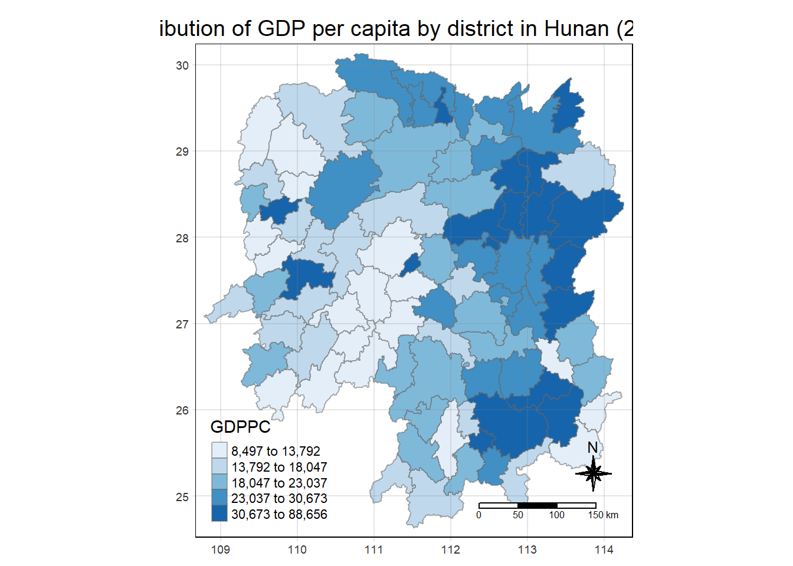

pacman::p_load(tmap, sf, tidyverse, sfdep, knitr)In-Class Exercise 2A: Spatial Weights
Using sfdep package
1 Task
For this task, we will be learning how to derive spatial weights using the sfdep package.
According to Josiah Parry, the developer of the package,
“sfdep builds on the great shoulders of spdep package for spatial dependence. sfdep creates an sf and tidyverse friendly interface to the package as well as introduces new functionality that is not present in spdep. sfdep utilizes list columns extensively to make this interface possible.”
2 Getting Started
We will first load the necessary packages using the following code chunk:
- tmap: for thematic mapping
- sf: for geospatial data handling (e.g. importing and exporting for spatial data and geoprocessing)
- tidyverse: a family of R packages for non-spatial data handling
- knitr: to generate static html tables
- sfdep: to calculate spatial weights and matrices, space time cube and hot spot analysis
3 Preparing the Geospatial Data
3.1 Importing the data
hunan <- st_read(dsn = "data/geospatial", layer="Hunan")Reading layer `Hunan' from data source
`C:\sihuihui\ISSS624\In-class_Ex\In-class_Ex2\data\geospatial'
using driver `ESRI Shapefile'
Simple feature collection with 88 features and 7 fields
Geometry type: POLYGON
Dimension: XY
Bounding box: xmin: 108.7831 ymin: 24.6342 xmax: 114.2544 ymax: 30.12812
Geodetic CRS: WGS 84From the above outcome, we know that hunandata is simple feature (sf) data frame with 88 features (each representing 1 geographical entity), and each feature is a polygon.It uses the WGS84 projection.
4 Preparing the Aspatial Data
4.1 Importing the data
hunan2012 <- read.csv("data/aspatial/Hunan_2012.csv")5 Combining Both Data Frames Using Left Join
hunan_GDPPC<- left_join(hunan, hunan2012) %>%
select(1:4, 7, 15)When joining these 2 data frames, we did not specify the by= because there is a common column in both data frames (i.e., Country )
Other than joining both data frames, we also use select() to pick the relevant columns that we want. Note that the geometry column was retained even though it was not specified.
We typically use a left join with a spatial layer (e.g. hunan) and nonspatial layer (hunan_GDPPC) so that we can retain spatial geometric properties.
6 Plotting the choropleth Map
We use the following code to visualise the choropleth map of Hunan’s 2012 GDPPC.
tmap_mode("plot")
tm_shape(hunan_GDPPC) +
tm_fill("GDPPC",
style = "quantile",
palette = "Blues",
title = "GDPPC") +
tm_borders(alpha = 0.5) +
tm_layout(main.title = "Distribution of GDP per capita by district in Hunan (2012)", main.title.position="center",
main.title.size = 1.2,
legend.height = 0.45,
legend.width = 0.35,
frame= TRUE) +
tm_compass(type = "8star", size=2) +
tm_scale_bar() +
tm_grid(alpha = 0.2)
7 Defining Weight Matrix
As learnt in our hands-on exercises, we can define weight matrices based on contiguity (adjacency) or distance.
7.1 Contiguity Weight Matrix
To compute contiguity weight matrix using sfdep package, we perform the following steps:
- identify contiguity neighbour list using
st_contiguity()of sfdep package, and - derive the contiguity spatial weights using
st_weights()of sfdep package.
To identify the contiguity neighbour list using Queen and Rook method, we use the following code chunks.
nb_queen <- hunan_GDPPC %>%
mutate(nb=st_contiguity(geometry),
.before=1)nb_rook <- hunan_GDPPC %>%
mutate(nb=st_contiguity(geometry, queen=FALSE),
.before=1)Let us take a look at the summary of the first lag neighbour list (i.e. nb) using the following code chunks.
summary(nb_queen$nb)Neighbour list object:
Number of regions: 88
Number of nonzero links: 448
Percentage nonzero weights: 5.785124
Average number of links: 5.090909
Link number distribution:
1 2 3 4 5 6 7 8 9 11
2 2 12 16 24 14 11 4 2 1
2 least connected regions:
30 65 with 1 link
1 most connected region:
85 with 11 linkssummary(nb_rook$nb)Neighbour list object:
Number of regions: 88
Number of nonzero links: 440
Percentage nonzero weights: 5.681818
Average number of links: 5
Link number distribution:
1 2 3 4 5 6 7 8 9 10
2 2 12 20 21 14 11 3 2 1
2 least connected regions:
30 65 with 1 link
1 most connected region:
85 with 10 linksThe summary report for Queen Contiguity based weight matrix shows that there are 88 area units in Hunan province. The most connected area unit has 11 neighbours. There are two are units with only one neighbour.
The summary report for Rook Contiguity based weight matrix shows that there are 88 area units in Hunan province. The most connected area unit has 10 neighbours. There are two are units with only one neighbour.
We can also display the output data frame using the following Methods. For the codes below, we will use nb_queen as example.
nb_queenSimple feature collection with 88 features and 7 fields
Geometry type: POLYGON
Dimension: XY
Bounding box: xmin: 108.7831 ymin: 24.6342 xmax: 114.2544 ymax: 30.12812
Geodetic CRS: WGS 84
First 10 features:
nb NAME_2 ID_3 NAME_3 ENGTYPE_3
1 2, 3, 4, 57, 85 Changde 21098 Anxiang County
2 1, 57, 58, 78, 85 Changde 21100 Hanshou County
3 1, 4, 5, 85 Changde 21101 Jinshi County City
4 1, 3, 5, 6 Changde 21102 Li County
5 3, 4, 6, 85 Changde 21103 Linli County
6 4, 5, 69, 75, 85 Changde 21104 Shimen County
7 67, 71, 74, 84 Changsha 21109 Liuyang County City
8 9, 46, 47, 56, 78, 80, 86 Changsha 21110 Ningxiang County
9 8, 66, 68, 78, 84, 86 Changsha 21111 Wangcheng County
10 16, 17, 19, 20, 22, 70, 72, 73 Chenzhou 21112 Anren County
County GDPPC geometry
1 Anxiang 23667 POLYGON ((112.0625 29.75523...
2 Hanshou 20981 POLYGON ((112.2288 29.11684...
3 Jinshi 34592 POLYGON ((111.8927 29.6013,...
4 Li 24473 POLYGON ((111.3731 29.94649...
5 Linli 25554 POLYGON ((111.6324 29.76288...
6 Shimen 27137 POLYGON ((110.8825 30.11675...
7 Liuyang 63118 POLYGON ((113.9905 28.5682,...
8 Ningxiang 62202 POLYGON ((112.7181 28.38299...
9 Wangcheng 70666 POLYGON ((112.7914 28.52688...
10 Anren 12761 POLYGON ((113.1757 26.82734...kable(head(nb_queen, n=10))| nb | NAME_2 | ID_3 | NAME_3 | ENGTYPE_3 | County | GDPPC | geometry |
|---|---|---|---|---|---|---|---|
| 2, 3, 4, 57, 85 | Changde | 21098 | Anxiang | County | Anxiang | 23667 | POLYGON ((112.0625 29.75523… |
| 1, 57, 58, 78, 85 | Changde | 21100 | Hanshou | County | Hanshou | 20981 | POLYGON ((112.2288 29.11684… |
| 1, 4, 5, 85 | Changde | 21101 | Jinshi | County City | Jinshi | 34592 | POLYGON ((111.8927 29.6013,… |
| 1, 3, 5, 6 | Changde | 21102 | Li | County | Li | 24473 | POLYGON ((111.3731 29.94649… |
| 3, 4, 6, 85 | Changde | 21103 | Linli | County | Linli | 25554 | POLYGON ((111.6324 29.76288… |
| 4, 5, 69, 75, 85 | Changde | 21104 | Shimen | County | Shimen | 27137 | POLYGON ((110.8825 30.11675… |
| 67, 71, 74, 84 | Changsha | 21109 | Liuyang | County City | Liuyang | 63118 | POLYGON ((113.9905 28.5682,… |
| 9, 46, 47, 56, 78, 80, 86 | Changsha | 21110 | Ningxiang | County | Ningxiang | 62202 | POLYGON ((112.7181 28.38299… |
| 8, 66, 68, 78, 84, 86 | Changsha | 21111 | Wangcheng | County | Wangcheng | 70666 | POLYGON ((112.7914 28.52688… |
| 16, 17, 19, 20, 22, 70, 72, 73 | Chenzhou | 21112 | Anren | County | Anren | 12761 | POLYGON ((113.1757 26.82734… |
7.1.1 Identifying higher Order Neighbours
In class, we learnt that other than the immediate neighbours (i.e. those regions along the boundaries of an area), we can also find out their neighbour’s neigbours (i.e., higher order contiguity neighbours). We can do this using st_nb_lag_cumul() of sfdep package.This function Creates an encompassing neighbor list of the order specified. For example, if the order is 2 the result contains both 1st and 2nd order neighbors.
In the following code chunk, we will generate the 1st and 2nd order neighbours for each region in Hunan.
nb2_queen <- hunan_GDPPC %>%
mutate(nb = st_contiguity(geometry),
nb2 = st_nb_lag_cumul(nb,2),
.before = 1) Let’s take a look at the differences between 1st order only and output with both 1st and 2nd order neighhbours
nb <- st_contiguity(sf::st_geometry(hunan_GDPPC))
summary(nb)Neighbour list object:
Number of regions: 88
Number of nonzero links: 448
Percentage nonzero weights: 5.785124
Average number of links: 5.090909
Link number distribution:
1 2 3 4 5 6 7 8 9 11
2 2 12 16 24 14 11 4 2 1
2 least connected regions:
30 65 with 1 link
1 most connected region:
85 with 11 linkssummary(nb2_queen)Neighbour list object:
Number of regions: 88
Number of nonzero links: 448
Percentage nonzero weights: 5.785124
Average number of links: 5.090909
Link number distribution:
1 2 3 4 5 6 7 8 9 11
2 2 12 16 24 14 11 4 2 1
2 least connected regions:
30 65 with 1 link
1 most connected region:
85 with 11 links
Neighbour list object:
Number of regions: 88
Number of nonzero links: 1324
Percentage nonzero weights: 17.09711
Average number of links: 15.04545
Link number distribution:
5 7 8 9 10 11 12 13 14 15 16 17 18 19 20 21 22 23 24 26 28 33
2 1 6 4 5 4 8 5 10 4 4 8 4 8 5 2 2 1 2 1 1 1
2 least connected regions:
30 88 with 5 links
1 most connected region:
56 with 33 links nb nb2 NAME_2 ID_3 NAME_3
NULL:NULL NULL:NULL Length:88 Min. :21098 Length:88
Class :character 1st Qu.:21125 Class :character
Mode :character Median :21150 Mode :character
Mean :21150
3rd Qu.:21174
Max. :21201
ENGTYPE_3 County GDPPC geometry
Length:88 Length:88 Min. : 8497 POLYGON :88
Class :character Class :character 1st Qu.:14566 epsg:4326 : 0
Mode :character Mode :character Median :20433 +proj=long...: 0
Mean :24405
3rd Qu.:27224
Max. :88656 When higher order neighbours are included, we note that the number of nonzero links and the average number of links increased.
7.2 Distance- based Weight Matrix
There are three popularly used distance-based spatial weights, they are:
- fixed distance weights,
- adaptive distance weights, and
- inverse distance weights (IDW).
7.2.1 Fixed Distance weights
We will use the following code chunk to determine the upper limit for distance band. This will be needed for the subsequent computation of fixed distance weight matrix.
geo <- sf::st_geometry(hunan_GDPPC)
nb <- st_knn(geo, longlat=TRUE)
dists <- unlist(st_nb_dists(geo, nb))
Explanation of the functions used above
- st_geometry(): Get, set, replace or rename geometry from an sf object
- st_knn(): Identifies the k nearest neighbors for given point geometry
- st_nb_dists():From an nb list and point geometry, return a list of distances for each observation’s neighbors list.
- unlist(): Given a list structure, simplifies it to produce a vector which contains all the atomic components which occur in the list.
We will derive the summary statistics of the nearest neighbour distances vector (i.e., dists) using the following code chunk.
summary(dists) Min. 1st Qu. Median Mean 3rd Qu. Max.
21.56 29.11 36.89 37.34 43.21 65.80 The summary statistics report above shows that the maximum nearest neighbour distance is 65.80km. By using a threshold value of 66km will ensure that each area will have at least one neighbour.
Now we will go ahead to compute the fixed distance weights by using the code chunk below.
wm_fd <- hunan_GDPPC %>%
mutate(nb=st_dist_band(geometry, upper=66),
wt = st_weights(nb),
.before = 1)
Explanation of the functions used above
- st_dist_band: To identify neighbours based on a distance band (i.e., 66km). The output is a list of neighbours (i.e., nb).
- st_weights: To calcualte polygon spatial weights of the nb list. Note that:
- the default style argument is set to “W” for row standardised weights, and
- the default allow_zero is set to TRUE, assigns zero as lagged value to zone without neighbours.
Let’s take a look at the data frame.
wm_fdSimple feature collection with 88 features and 8 fields
Geometry type: POLYGON
Dimension: XY
Bounding box: xmin: 108.7831 ymin: 24.6342 xmax: 114.2544 ymax: 30.12812
Geodetic CRS: WGS 84
First 10 features:
nb
1 2, 3, 4, 5, 57, 64
2 1, 57, 58, 78, 85
3 1, 4, 5, 57
4 1, 3, 5, 6
5 1, 3, 4, 6, 69
6 4, 5, 69
7 67, 71, 84
8 9, 46, 47, 78, 80
9 8, 46, 66, 68, 84, 86
10 16, 20, 22, 70, 72, 73
wt NAME_2
1 0.1666667, 0.1666667, 0.1666667, 0.1666667, 0.1666667, 0.1666667 Changde
2 0.2, 0.2, 0.2, 0.2, 0.2 Changde
3 0.25, 0.25, 0.25, 0.25 Changde
4 0.25, 0.25, 0.25, 0.25 Changde
5 0.2, 0.2, 0.2, 0.2, 0.2 Changde
6 0.3333333, 0.3333333, 0.3333333 Changde
7 0.3333333, 0.3333333, 0.3333333 Changsha
8 0.2, 0.2, 0.2, 0.2, 0.2 Changsha
9 0.1666667, 0.1666667, 0.1666667, 0.1666667, 0.1666667, 0.1666667 Changsha
10 0.1666667, 0.1666667, 0.1666667, 0.1666667, 0.1666667, 0.1666667 Chenzhou
ID_3 NAME_3 ENGTYPE_3 County GDPPC geometry
1 21098 Anxiang County Anxiang 23667 POLYGON ((112.0625 29.75523...
2 21100 Hanshou County Hanshou 20981 POLYGON ((112.2288 29.11684...
3 21101 Jinshi County City Jinshi 34592 POLYGON ((111.8927 29.6013,...
4 21102 Li County Li 24473 POLYGON ((111.3731 29.94649...
5 21103 Linli County Linli 25554 POLYGON ((111.6324 29.76288...
6 21104 Shimen County Shimen 27137 POLYGON ((110.8825 30.11675...
7 21109 Liuyang County City Liuyang 63118 POLYGON ((113.9905 28.5682,...
8 21110 Ningxiang County Ningxiang 62202 POLYGON ((112.7181 28.38299...
9 21111 Wangcheng County Wangcheng 70666 POLYGON ((112.7914 28.52688...
10 21112 Anren County Anren 12761 POLYGON ((113.1757 26.82734...7.2.2 Adaptive Distance weights
We will derive adaptive spatial weights using the following code chunk.
wm_ad <- hunan_GDPPC %>%
mutate(nb = st_knn(geometry,
k = 8),
wt = st_weights(nb),
.before = 1)
Explanation of the functions used above
- st_knn(): To identify neighbours based on a k (i.e., k=8 indicates the nearest 8 neighbours). The output is a list of neighbours (i.e., nb).
7.2.3 Inverse Distance weights
We will derive an inverse distance weights using the following code chunk.
wm_idw <- hunan_GDPPC %>%
mutate(nb = st_contiguity(geometry),
wt = st_inverse_distance(nb, geometry,
scale = 1,
alpha = 1),
.before=1)
Explanation of the function used above
- st_inverse_distance(): To calculate inverse distance weights of neighbours on the nb list.